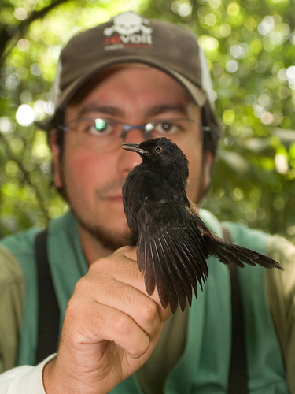

|
 I am a biologist with a PhD in Ecology. During my academic training I acquired solid skills in scientific research, quantitative analysis and R programming. As a professional ornithologist I acquired extensive field experience in the Atlantic forest, Cerrado and Amazon biomes. My main scientific interests are in population and community ecology, ornithology, data science, conservation biology and chronobiology. I am also interested in philosophy of science and quantitative approaches in general. I support initiatives of free sharing of knowledge, such as open source, free software, and creative commons licenses. |
|
|
|
Scroll down for information about my education, teaching and professional experience. Access my CV Lattes here (in portuguese). |
| Year | Degree |
|---|---|
| 2017 | PhD in Ecology at the University of Sao Paulo. PhD Thesis: Population and community dynamics of butterflies and birds along time. Held at The Theorethical Ecology Lab. Advisor: Prof. Dr. Paulo Inacio Prado. Supported by Coordination for the Improvement of the Higher Level Personnel (CAPES) and Sao Paulo Research Foundation (FAPESP). |
| 2011 | Master in Ecology at the University of Sao Paulo. MSc Thesis: The conservation value of forest corridors for birds in fragmented landscapes. Held at the Landscape Ecology and Conservation Lab. Advisor: Prof. Dr. Jean Paul Metzger. Supported by Coordination for the Improvement of the Higher Level Personnel (CAPES), National Council for Scientific and Technological Development (CNPq), and Federal Ministry for Education and Research (BMBF - Germany). |
| 2004 | Bachelor in Biology at the University of Sao Paulo. Monography: Effects of forest fragmentation on artificial nests predation. Supported by Sao Paulo Research Foundation (FAPESP). |
| 2003 | Internship at the Biological Dynamics of Forest Fragments Project (BDFFP – INPA/Smithsonian Institution) in the program Training for Young Scientists in Amazon. Monography: Polination aspects of Psychotria iodotrichia (Rubiaceae) in primary and secondary forests in central Amazon. Supported by the World Wildlife Fund (WWF) and the State University of New York (SUNY). |
| Year | Experience |
|---|---|
| 2016 & 2017 | Lecturer in the course Field Ornithology - Birds as bioindicators at the Instituto Butantan, Brazil. Lectures given: Methods for the study of populations and communities, Introduction to radiotracking, and Data analysis. |
| 2009 to 2017 | Invited lecturer in the course BIZ0304 - Diversity, natural history, and conservation of vertebrates in South America (undergraduate level - Biological Sciences) at the University of Sao Paulo. Participation in the lecture Techniques for studying birds in the field. |
| 2016 | Teaching assistant (monitor - PAE) in the course BIE 0320 - Ecology of plant populations and communities (undergraduate level - Biological Sciences) at the University of Sao Paulo. |
| 2015 | Invicted lecturer at the course BIE5730 - Statistical models in population ecology (graduate level - Ecology) at the University of Sao Paulo. Lecture given: Using RMark for capture-recapture data analysis. |
|
|